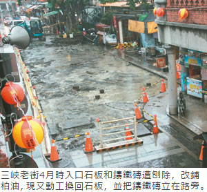

三峽老街又刨？ 這次鋪回石板了
4月時因騎士滑倒拆除石板、鑄鐵磚 引起不滿 經協調後重鋪 盼兼顧行車安全跟文化保存
魏翊庭｜聯合報／新北市新聞｜2016年11月9日
今年4月6日三峽老街入口具有文化意義的石板和鑄鐵磚，因為易使騎士滑倒被刨除，引來三峽文史工作者和居民不滿，新北市長朱立倫還曾說是「不幸的錯誤」，經過7個月協調，前天動工重新鋪回石板，鑄鐵磚將被立在路旁，3個月內完工，希望在行車安全和文化保存中找到平衡點。
三峽老街2007年進行整修工程，以青斗石、花崗石打造石板路，地面鋪設文化鑄鐵磚，製造整體意象，鑄鐵磚內容為三峽文化風貌和歷史發展進程介紹，其中也有李梅樹紀念館授權、使用李梅樹畫作製成的。
今年被拆除的石板路有30公尺，鑄鐵磚30片，其中5片刻有李梅樹畫作，如「三峽後街」、「清溪浣衣」，其他則刻有三峽藍染文化、特色樟腦、名產「金牛角」等。
公所刨除後鋪上柏油路，起引文史工作者抨擊不重視文化，在地人張光驊4月10日成立三峽文資守護聯盟，北大學生也參與抗議。三峽區公所前天定案將柏油改回石板，鑄鐵磚因為雨後易滑，將立在路旁，供民眾欣賞。
當地三峽里長黃宗祥說，其實附近住戶和商家都擔心跌倒，不願改回，但城鄉局表示，將使用的高壓磚，品質較好也不會滑，既然有保證，居民會尊重行政權，對於刨除爭議，只能說當初設計不良才導致。
三峽區長陳健民說，重鋪材質是高壓混凝土和石板混合而成，較好看又安全，並會新設老街入口意象，鑄鐵磚改成立起，避免騎士再滑倒，更方便欣賞，總經費約5百萬元，80天內完工。但部分老街店家表示，真的不懂為何剛鋪柏油又刨掉。
因為地磚事件而辦「老街川流」特展的張柏宥說，歐洲即便百年路磚再怎麼滑，歐洲人也甘願保留，他了解台灣騎車的人較多，希望可以騎慢一點小心安全。